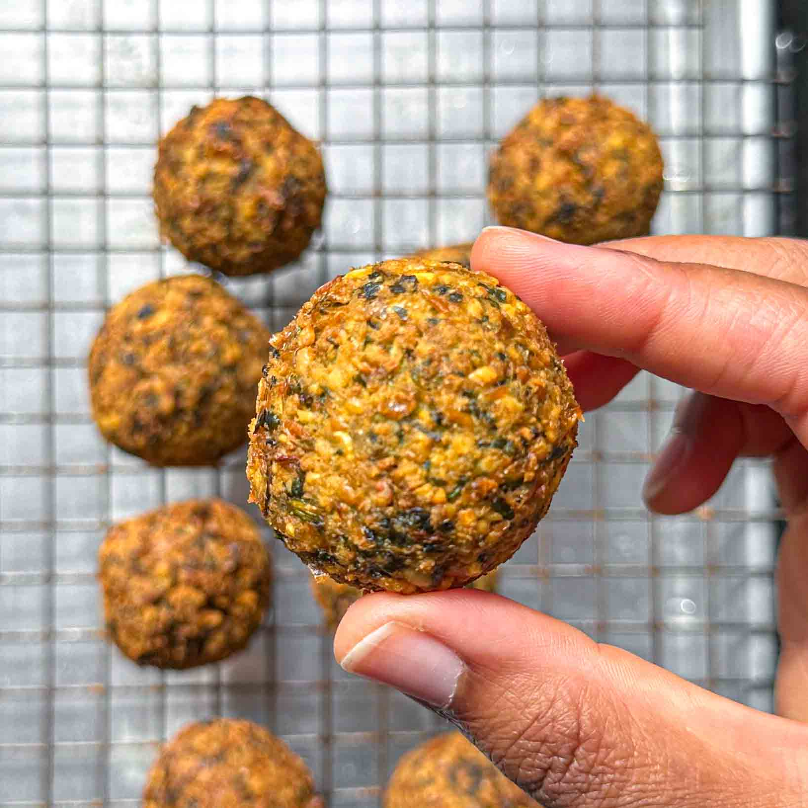

Falafel Recipe

"Crispy on the outside, light and fluffy in the middle, and packed with fresh herbs and spices – what’s not to love? The key to making great falafel is twofold. First, you need to use dried chickpeas instead of tinned ones – that’s what will give your falafel a light, fluffy almost crumbly interior. Second, you want to coarsely grind your soaked chickpeas – if they’re too finely ground, the falafel will be dense.”
Ingredients
- 200g dried chickpeas
- 30g fresh coriander, roughly chopped
- 30g fresh flat-leaf parsley, roughly chopped
- 4 spring onions, quartered
- 2 large garlic cloves, halved lengthwise
- 1 tsp ground cumin
- ½ tsp ground coriander
- 1l oil (sunflower or rapeseed)
Steps
- Soak the chickpeas
overnight
in three times the amount of water. This step is non-negotiable: using dried chickpeas instead of tinned ones is the key to making great falafel that’s crispy on the inside and light, fluffy and almost crumbly in the middle.
- Rinse, drain and dry the chickpeas, then transfer to a food processor and blitz, scraping down the sides as needed, until they resemble finely chopped nuts. A course texture is key here. Transfer to a large bowl.
- Place the fresh coriander, fresh parsley, spring onions and garlic cloves in the same food processor (no need to wash it) and blitz until coarsely chopped.
- Add the chopped aromatics to the chickpeas, along with the ground cumin, ground coriander and salt. Use your hands to gently toss the mixture until everything is well-combined, then cover and refrigerate for 15 to 20 minutes. This will allow the chickpea starches to seep out, which will help the falafel keep their shape.
- Heat the vegetable oil to 170°C. In the meantime, using wet hands, scoop out a tablespoon of the falafel mix and shape into a ball. Repeat with the remaining mixture.
- Working in batches, fry the falafel until deep brown and crisp, 4 to 5 minutes.
- If making the green tahini sauce, place the ingredients in a blender and blitz until smooth. Serve the falafel with the sauce and enjoy.